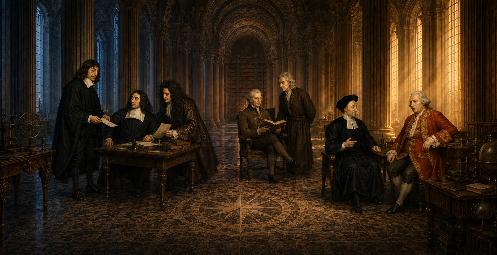

A conversation
across centuries.
Reading history. Thinking forward.

Select a philosopher to exploreExplore the center
Research and publishing
Modern Philosophy · Issue 1
George Berkeley’s Works and Legacy
2026 · Fujian Education Press

Western Thought & Culture Library


Translations for an ongoing conversation. Explore 29 volumes.
Browse the libraryExplore the center through English pages on activities, people and publications. Original Chinese reports and publication materials are clearly marked where linked.
A meeting place for historical inquiry and contemporary questions
The Center of Modern Thought at Yangzhou University brings together historical depth, an international outlook and a concern for public life. It connects the study of modern intellectual traditions with philosophy, culture, technology and society, supporting research, interdisciplinary collaboration and open academic exchange.
Our work places early modern European thought in conversation with contemporary questions about technology, artificial intelligence, modernity and values, while supporting dialogue between Chinese and Western intellectual traditions.
Four areas of inquiry
Early modern European thought
Descartes, Leibniz, Berkeley and their textual traditions; reason, subjectivity, nature, experience and method.
Modernity and contemporary questions
Technology, artificial intelligence, globalisation, ecological challenges and conflicts of values, approached through intellectual history.
Chinese–Western intellectual dialogue
Conceptual history, comparative inquiry, translation and the reinterpretation of philosophical traditions.
Intellectual history in public life
Books, public lectures and digital resources that connect research with education and public culture.
Recent seminars
Editing and translating Descartes’s correspondence
Textual transmission, editorial choices and plans for Chinese translation.
Read the report →George Berkeley and the world
Global perspectives on mind and nature, knowledge exchange and intellectual circulation.
Read the report →Robert Boyle’s significance for our time
A seminar looking towards the 400th anniversary of Boyle’s birth in 2027.
Read the report →
Research and scholarly collaboration
The center is directed by Liu Ming (刘铭). Core researchers, early-career scholars and editorial collaborators contribute to research, translation, publishing and academic activities.
The current international advisory group comprises 12 advisers based in six countries: the United Kingdom, France, Australia, the United States, Italy and Japan. David Berman (1942–2026), a former international adviser, is remembered separately in the memorial section.
Meet our researchers and advisers →Publishing and translation
《近代哲学》 · Modern Philosophy
A Chinese-language scholarly publication issued in book form, supporting international dialogue on early modern philosophy. Its first issue focuses on George Berkeley’s Works and Legacy.
Issue information and submissions →Western Thought & Culture Library
The 西方思想文化译丛 brings philosophy, intellectual history and cultural inquiry to Chinese readers. Browse the 29 volumes in this website catalogue, with English introductions and publication details.
Browse the English catalogue →Get in touch
For submissions, scholarly collaboration, editorial matters and research materials, contact the editorial office.
Hehuachi Campus, Yangzhou University88 Daxue South Road, Hanjiang District
Yangzhou, Jiangsu 225009, China